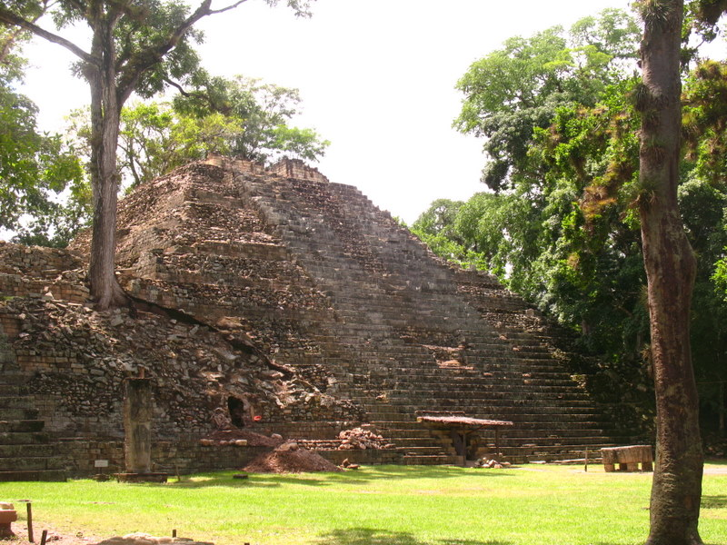
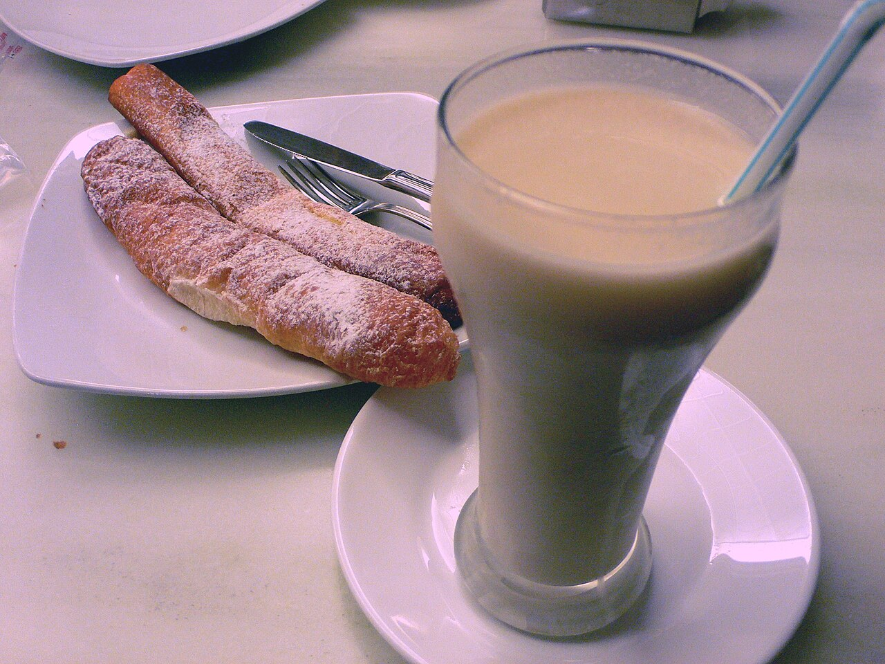

Spania · Chile · 45 min
Arbeidsutkast · til lærervurdering
Jul i Spania og Chile
To land, samme høytid.
Les · forstå · bruk språket
En dag. Et sted. En ny historie.
Kulturopplegg med tekst, bilder, oppgaver og lærerveiledning. Velg et land eller et tema, og øv videre på ordene fra teksten.
Spania · Chile · 45 min
Arbeidsutkast · til lærervurdering
To land, samme høytid.

Honduras · 45 min
Arbeidsutkast · til lærervurdering
En lørdag med Lucía: mat, familie og spor fra fortiden.
Colombia · 45 min
Arbeidsutkast · til lærervurdering
En søndag med Diego: havet, nærmiljøet og et måltid sammen.
Mexico · 45 min
Arbeidsutkast · til lærervurdering
En lørdag med Elena: markedet, maisen og språkene i Oaxaca.

Spania · 45 min
Arbeidsutkast · til lærervurdering
En ettermiddag med Álex: sykkel, grønne rom og horchata.
Peru · 45 min
Arbeidsutkast · til lærervurdering
En morgen med Mateo: poteter, språk og et levende marked.
Ekvatorial-Guinea · 45 min
Arbeidsutkast · til lærervurdering
En dag med Inés: tegning, kystliv og flere språk.